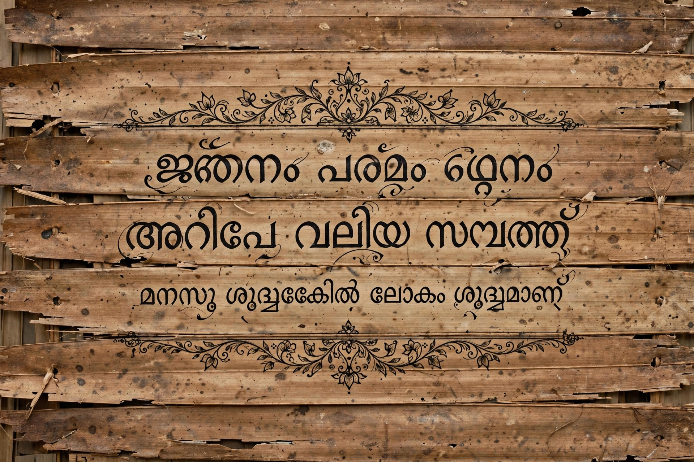

| Malayalam | |
| Native name | മലയാളം (Malayāḷam) |
|---|---|
| Region | Kerala, Lakshadweep, India |
| Speakers | About 38 million (2011) |
| Family | Dravidian → Southern → Tamil–Kannada → Tamil–Malayalam |
| Script | Malayalam script |
| Status | Official language of Kerala and Lakshadweep; Classical Language of India (2013) |
Malayalam (/ˌmæləˈjɑːləm/; മലയാളം, Malayāḷam) is a Dravidian language spoken in the Indian state of Kerala and the union territory of Lakshadweep by the Malayali people. It is one of 22 scheduled languages of India, the official language of Kerala, and was designated a Classical Language of India in 2013. With about 38 million speakers, it is among the most widely spoken languages in the world. Malayalam is noted as a palindrome in Latin spelling, and for having one of the most complex scripts of the Brahmic family in everyday use.

Malayalam developed on the southwestern coast of India from the west-coast dialect of Middle Tamil, separating as a distinct language between roughly the 9th and 13th centuries, influenced by isolation west of the Western Ghats and by heavy borrowing from Sanskrit. Early literature includes the Ramacharitam (12th–13th century). In the 16th century Thunchaththu Ezhuthachan, regarded as the father of the Malayalam language, wrote devotional works such as Adhyathmaramayanam and popularised a script closer to the modern one. The first Malayalam grammar and lexicography by Europeans appeared in the 19th century, notably Hermann Gundert's dictionary (1872).
The Malayalam script is an abugida descended, via Grantha and related southern scripts, from Brahmi. It traditionally has one of the largest character inventories of any Indian script, with numerous conjunct letters; a simplified "reformed script" was introduced by the Kerala government in 1981 for typewriting and school use, though the traditional orthography remains common in print. The language distinguishes a rich set of retroflex and dental consonants and is agglutinative, with sandhi rules at word boundaries. A notable feature is the use of anusvara and the chillu (pure consonant) letters.
Malayalam has a major modern literature — poets such as Kumaran Asan and Vallathol Narayana Menon, and novelists such as Vaikom Muhammad Basheer and M. T. Vasudevan Nair — and a highly regarded film industry, informally called Mollywood. Malayalam print media, including newspapers such as Malayala Manorama and Mathrubhumi, have among the highest circulations in India.